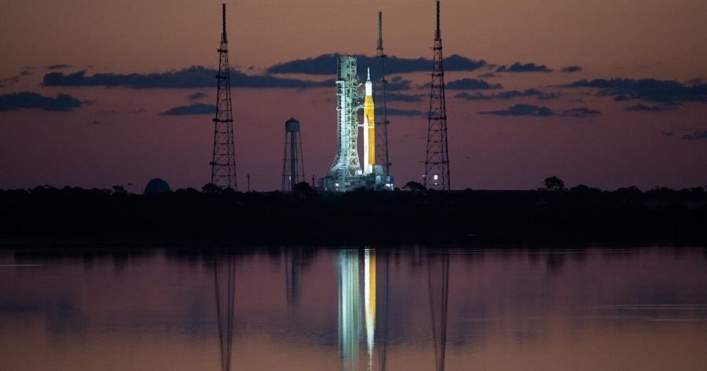

မနေ့က ဩဂုတ်လ ၂၉ ရက်နေ့ အမေရိကန် အရှေ့ပိုင်း စံတော်ချိန် ၈:၃၃ နာရီမှာ လွှတ်တင်ဖို့ စီစဉ်ထားတဲ့ အာတီးမီးစ် ၁ (Artemis 1) ဒုံးပျံ ခရီးစဉ်ကို နောက်ဆုံး အချိန်ပိုင်းမှ ကပ်ပြီး ရွှေ့ဆိုင်း လိုက်ပါတယ်။ ဒီ ခရီးစဉ်ဟာ လပေါ်ကို လူသားတွေ ပြန်လည် ခြေချနိုင်ဖို့ ပထမဆုံး ခြေလှမ်း တစ်ရပ် ဖြစ်ပါတယ်။
ဒီလို ရွှေ့ဆိုင်း လိုက်ရတာဟာ အာတီးမီးစ် ဒုံးပျံရဲ့ ဒုံးစက်အင်ဂျင် ၄ လုံး အနက် တစ် လုံးမှာ ရှိတဲ့ ဟိုက်ဒြိုဂျင် ဓါတ်ငွေ့ပိုက်လိုင်းမှာ ပြဿနာ ပေါ်ပေါက်ခဲ့လို့ ဖြစ်တယ်လို့ သိရပါတယ်။
ဒီ ဟိုက်ဒြိုဂျင် ဓါတ်ငွေ့ပိုက်လိုင်းကို ပြုပြင်ဖို့ အင်ဂျင်နီယာတွေ အချိန် ၂ နာရီ ခွဲ ကျော်ကြာအောင် ကြိုးပမ်း ခဲ့ကြပေမယ့် မအောင်မြင်တဲ့ အဆုံးမှာ ဒုံးပျံ ခရီးစဉ်ကို ရွှေ့ဆိုင်းဖို့ ဆုံးဖြတ်ခဲ့ ကြတာ ဖြစ်ပါတယ်။
ဒီ ဟိုက်ဒြိုဂျင် ဓါတ်ငွေ့ ပိုက်လိုင်းဟာ အေးခဲထားတဲ့ ဟိုက်ဒြိုဂျင် ဓါတ်ငွေ့ ရည်တွေကို အင်ဂျင်ထဲက ဖြတ်သန်း စီးဆင်းပြီး အင်ဂျင်တွေ စက်မနှိုးခင် အေးအောင် ပြုလုပ်တဲ့ စနစ်အတွက် တပ်ဆင်ထားတာ ဖြစ်ပါတယ်။
ဒီ စနစ်ကို ပြီးခဲ့တဲ့ ဇွန်လ ရီဟာဆယ် အစမ်း လေ့ကျင့်စဉ်က စမ်းသပ်ခဲ့ခြင်း မရှိခဲ့ ပါဘူး။ အကြောင်းကတော့ အဲ့သည် အချိန်က ပိုက်ဆက်တဲ့ အဆက်တွေ မလုံတဲ့ အတွက် ပြုပြင်နေရလို့ ဖြစ်ပါတယ်။
ဒီနေ့ ပစ်လွှတ်ဖို့ ပြင်ဆင်ချိန်မှာ ဟိုက်ဒြိုဂျင် ဓါတ်ငွေ့ရည် တွေဟာ အင်ဂျင် ၄ လုံး အနက် ၃ လုံးထဲကို ပုံမှန်အတိုင်း စီးဝင်တာကို တွေ့ရပါတယ်။ ဒါပေမယ့် ကျန်တဲ့ တစ်လုံး ဖြစ်တဲ့ အင်ဂျင် အမှတ် ၃ ထဲကို ဟိုက်ဒြိုဂျင် အရည် စီးဝင်ခြင်း မရှိပါဘူး။
အချိန် အတော် ကြာအောင် နည်းလမ်း မျိုးစုံ အသုံးပြုခဲ့ ပေမယ့် အင်ဂျင် အမှတ် ၃ ထဲကို ဟိုက်ဒြိုဂျင် ဓါတ်ငွေ့ရည် စီးဆင်းအောင် ပြုလုပ်နိုင်စွမ်း မရှိခဲ့ ဘူးလို့ သိရပါတယ်။
ဒီ့နောက် ပစ်လွှတ်ခါနီး မိနစ် ၄၀ အလိုမှာ လွှတ်တင်ချိန်ကို ခေတ္တ ဆိုင်းငံ့ပြီး ဒီ ဟိုက်ဒြိုဂျင် ဓါတ်ငွေ့ပိုက် ပြဿနာကို အဖြေရှာ ကြဖို့ ကြိုးစားခဲ့ ကြပါတယ်။ မူလကတော့ ဒီ ပြင်ဆင်မှုဟာ အချိန် ၁၀ မနစ် လောက်ပဲ ကြာမယ်လို့ ယူဆခဲ့ ကြပါတယ်။
နောက်ထပ် အချိန် တစ်နာရီလောက် အကြာအထိ ဒီ ပြဿနာကို အဖြေ မရှာနိုင်တဲ့ အခါမှာတော့ ပစ်လွှတ်ဖို့ အစီအစဉ်ကို ရွှေ့ဆိုင်း လိုက်ရပါတော့တယ်။ ဒါပေမယ့် ဒုံးပျံထဲ ဖြည့်သွင်းထားတဲ့ ဟိုက်ဒြိုဂျင်နဲ့ အောက်ဆီဂျင် လောင်ဆာရည် တွေကို ပြန်မထုတ် မီမှာ ပြဿနာ အဖြေရှာဖို့ လိုအပ်တဲ့ အချက်အလက်တွေကို အရင် ကောက်ယူ စုဆောင်းမယ်လို့ သိရပါတယ်။
နာဆာရဲ့ အာတီးမီစ်း လွှတ်တင်ရေးဟာ ပစ်လွှတ်ဖို့ စီစဉ်ထားချိန် မတိုင်မီ ၉ နာရီခန့် ကတဲက ပြဿနာ တွေနဲ့ စတင် ကြုံတွေ့ ခဲ့ရတာပါ။ ပစ်လွှတ်ရေး မန်နေဂျာ တွေက ဒုံးပျံ တွေထဲကို လောင်ဆာရည်တွေ ဖြည့်ဖို့ ခွင့်ပြုမိန့် ချပေးလိုက် ချိန် မှာပဲ ပစ်လွှတ်စင်ရဲ့ အနီးတဝိုက်မှာ မိုးကြိုးမုန်တိုင်းတွေ တိုက်ခတ် လာတဲ့ အတွက် လောင်ဆာဖြည့်တာကို အချိန် တစ်နာရီခန့် နောက်ဆုတ် ခဲ့ရပါတယ်။
ဒီနေ့ ဖြစ်ရပ်နဲ့ ပတ်သက်လို့ နာဆာရဲ့ အကြီးအကဲ ဖြစ်သူ ဘီလ် နယ်လ်ဆင် (Bill Nelson) ကတော့ “မမှန်မချင်း လွှတ်တင်မှာ မဟုတ်ဘူး” လို့ ပြောပါတယ်။
နောက်ထပ် လွှတ်တင်မယ့် အချိန်ကိုတော့ နာဆာက ထုတ်ပြန်ခြင်း မပြု သေးပါဘူး။ ဒါပေမယ့် နောက်လွှတ်တင်မယ့် ရက်ဟာ စက်တင်ဘာ ၂ ရက်နေ့ နောက်ပိုင်းမှပဲ ဖြစ်နိုင် ပါလိမ့်မယ်။ စက်တင်ဘာ ၂ ရက်နေ့ နေ့လည် ၁၂ နာရီ ၄၈ မိနစ် ကနော နောက် နှစ်နာရီ အချိန် အတောအတွင်း လွှတ်တင်ဖို့ အခွင့်အလမ်း ရှိလိမ့်မယ်လို့ သိရပါတယ်။
အကယ်၍ စက်တင်ဘာ ၂ ရက်နေ့ မလွှတ်တင် နိုင်ရင် နောက်ထပ် စက်တင်ဘာ ၅ ရက်နေ့ ညနေ ၅ နာရီ ၁၂ မိနစ်ထိ ထပ်မံ စောင့်ဆိုင်းရမယ်လို့ သိရပါတယ်။
ဒါပေမယ့် ဒီလာမယ့် ရက်ပိုင်းတွေ အတွင်း ဒီဒေသမှာ မိုးသက်မုန်တိုင်းတွေ ကျရောက်နိုင်တဲ့ အခြေအနေ ရှိနေတာကြောင့် ဘယ်နေ့ လွှတ်တင်ဖြစ်မယ် ဆိုတာကတော့ မိုးလေဝေသ အခြေအနေ အပေါ် များကြီး မူတည်ကြောင်း ပညာရှင် တွေက ထောက်ပြကြ ပါတယ်။
Ref: First Artemis 1 launch attempt scrubbed | Space News
လသို့လွှတ်တင်မည့် ဒုံးပျံခရီးစဉ် အချိန်ကပ်မှ ရွှေ့ဆိုင်းလိုက်ရ

August 30, 2022
Other Posts
- စကြာဝဠာကနဦးမှ ရှေးအကျဆုံး black hole တွင်းနက်ကြီး ဂျိမ်းစ်ဝက်ဘ် ရှာတွေ့
- အလင်း ဖိုတွန်ကို ထက်ခြမ်းခြမ်းနိုင်မယ်
- ထင်ရှားသူတို့ နှုတ်ထွက်စကား (၁)
- စကြာဝဠာ၏ လျှို့ဝှက်နံပါတ်
- အိုင်းစတိုင်း၏ လက်ရေးစာတမ်း ဒေါ်လာ ၁၃ သန်းနှင့် ရောင်းချ
- Antimatter (ဆန့်ကျင်ဒြပ်) ဆိုတာဘာလဲ
- သက်ရှိထင်ရှား ရှိနေသေးတဲ့ ကမ္ဘာ့ရှေးအကျဆုံး သတ္တဝါ ရှာတွေ့
- အင်္ဂါဂြိုလ်ပေါ်မှာ မြစ်ချောင်းတွေရှိခဲ့တဲ့ အထောက်အထား
- အနာဂါတ်နည်းပညာ နယ်ပယ်တွေမှာ တိုးချဲ့ သုတေသန ပြုမယ့် ဟွန်ဒါ
- ကမ္ဘာအနီးက ဖြတ်သွားမယ့် ဥက္ကာပျံကြီးတွေ